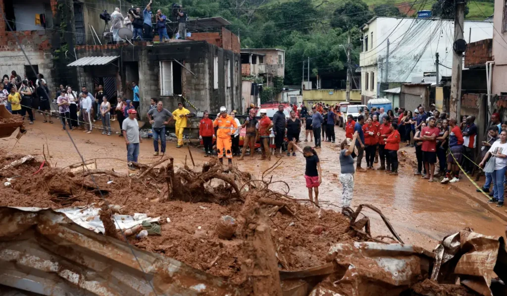

Projeto Morro do Cavalão
O Projeto Morro do Cavalão é uma iniciativa permanente da Força Coletiva voltada ao apoio de mulheres e mães atípicas em situação de vulnerabilidade social na comunidade.
Dentro desse projeto, realizamos a ação Natal Solidário, um movimento especial de fim de ano dedicado à arrecadação e distribuição de cestas básicas e itens essenciais. A iniciativa levou não apenas alimento, mas também cuidado, presença e dignidade às famílias atendidas.
Mais do que uma entrega pontual, o Natal Solidário representa o compromisso contínuo da Força Coletiva com a transformação social, fortalecendo vínculos comunitários e promovendo esperança em datas que simbolizam união e renovação.

Projeto Ruas do Centro de Niterói
O Projeto Ruas do Centro de Niterói foi criado com o propósito de levar acolhimento, escuta e apoio direto às pessoas em situação de rua na região central da cidade.
A iniciativa mobilizou voluntários para a distribuição de kits de higiene, alimentos e roupas, especialmente durante períodos de frio intenso, quando a vulnerabilidade se torna ainda mais evidente.
Além da assistência material, o projeto prioriza o contato humano, o respeito e a presença ativa, reafirmando o compromisso da Força Coletiva em enxergar e cuidar daqueles que muitas vezes são invisibilizados pela sociedade.

Projeto Solidariedade Juiz de Fora
O Projeto Solidariedade Juiz de Fora nasceu com a missão de apoiar famílias em situação de vulnerabilidade social na cidade, promovendo ações práticas de cuidado e mobilização comunitária.
A iniciativa contou com a arrecadação e distribuição de alimentos, roupas e itens de higiene, reunindo voluntários e apoiadores em torno de um objetivo comum: gerar impacto real na vida de quem mais precisa
.Mais do que uma ação pontual, o projeto fortaleceu redes locais de apoio e reafirmou a essência da Força Coletiva — transformar solidariedade em atitude concreta.